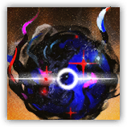
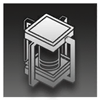

Crazelyseon, the Ascendant of Cosmoi
Ranged Art; Collapsal Leader

|
 |
The Ascendant of Cosmoi. Untouchable, incomprehensible, insurmountable. Doing all that "should not be" above all that "should." Echoing all that is "boundless" above all that is "finite." The gardener who sows void, the sentinel who gazes into emptiness. Chaotic Architecture. Its thoughts are as chaotic as its instincts; its truth is as bewildering as its deeds. What is it, exactly? How do we describe a being like this? |
"What is that? A sovereign from higher dimensions, or one who has ascended among all cosmoses? A sentinel who examines all dimensions, or a gardener who sows void upon reality?"
Crazelyseon
Huge Aberration (Collapsal), Unaligned
| AC 23 | Initiative +20 (30) |
| HP 341 (36d8+180) | |
| Speed 120 ft., fly 120 ft. (hover) | |
| Mod | Save | Mod | Save | Mod | Save | |||||||||
|---|---|---|---|---|---|---|---|---|---|---|---|---|---|---|
| STR | 26 | +8 | +8 | DEX | 18 | +4 | +4 | CON | 24 | +7 | +17 | |||
| INT | ██ | ██ | ██ | WIS | 18 | +4 | +14 | CHA | 28 | +9 | +9 |
| Skills Perception +14 |
| Immunities Psychic; Blinded, Deafened, Poisoned, Charmed, Frightened, Paralyzed, Stunned, Prone, Exhaustion |
| Senses Truesight 600 ft., Blindsight 600 ft.; passive Perception 24 |
| Languages None |
| CR 33 (230,000 XP; PB +10) |
Traits
Legendary Resistance (5/Day). When Crazelyseon fails a saving throw, it can change the result to a success.
Magic Resistance. Crazelyseon has Advantage on saving throws made to resist spells or other magical effects.
Projection Disintegration. When Crazelyseon dies outside the Void, its body is destroyed but its essence is banished back into the Void and unable to take physical form for a period of time.
Otherworldly Mind. Crazelyseon is immune to all effects that detect or read its emotions or thoughts, and ignores any divination spell cast targeting it. Perception (Insight) checks made to perceive Crazelyseon automatically fail. Crazelyseon's Intelligence attribute cannot be confirmed by any means. Crazelyseon ignores any effect that requires it to make an Intelligence-based check.
The Not Accepted. If Crazelyseon is within 60 ft. of Stargate or Seedbed, it cannot be affected by reality and has Total Cover. Casting Wish on Crazelyseon suppresses this effect for 1 minute, but the caster must maintain Concentration during suppression.
Emotional Entity. Wisdom Saving Throw: DC 22, any creature that starts its turn within Crazelyseon's 120-foot Emanation and can perceive Crazelyseon. Failure: The target is Frightened for up to 1 minute, and while Frightened it has Disadvantage on all d20 checks. The creature can retry the saving throw at the end of each of its turns, ending the effect on a success.
Recollapse (Mythic Trait; Recharges on Long Rest). While Crazelyseon's HP is reduced to 0, it doesn't die. At the start of its next turn, its HP resets to 675, it recharges its The Great Distortion, and it regains all expended uses of Legendary Resistance. Additionally, for one hour, Crazelyseon can use the options in the "Mystic Actions" section.
The Promised End. 1 minute after Crazelyseon rolls Initiative, if its HP is not reduced to 0, it immediately deals 105 (10d10+50) necrotic damage that can't be reduced to each chosen creature within 1,200 ft. A creature reduced to 0 HP by this damage becomes contaminated and gains the Collapsal template.
Actions
Multiattack. Crazelyseon chooses two targets and makes one Mind Ripper attack against each. It can then make one Inverted Reality attack.
Mind Ripper. Melee or Ranged Attack Roll: +19 to hit (has Advantage if the target is on a Seedbed), reach 10 ft. or range 120 ft. Hit: 43 (6d10+10) psychic damage, and the target is Stunned until the end of its turn. The target can choose not to be Stunned, instead taking 33 psychic damage that can't be reduced.
Inverted Reality. Melee or Ranged Attack Roll: +19 to hit, reach 10 ft. or range 600 ft. Hit: The target takes necrotic damage that can't be reduced equal to the HP it has lost.
The Great Distortion (Recharge 5-6). Crazelyseon oscillates nearby space and warps reality, sowing the unknowable upon the real. Charisma Saving Throw: DC 27, each chosen creature within Crazelyseon's 120-foot Emanation that can perceive Crazelyseon. Failure: 110 (20d10) necrotic damage, and the target is Incapacitated until the end of its next turn. Success: Half damage only. Failure or Success: A creature reduced to 0 HP by this damage becomes contaminated and gains the Collapsal template.
Bonus Actions
Sowing Wanderer. Crazelyseon teleports to any unoccupied space within 60-foot, then the ground within 10 ft. of its landing point is immediately transformed into a Seedbed.
Seedbeds【Special Terrain】
Seedbeds are considered Difficult Terrain for any non-Collapsal creature. Seedbeds disrupt the minds of creatures above them, regardless of distance. Wisdom Saving Throw: DC 27, each creature that starts its turn above a Seedbed and can perceive it. Failure: 22 (4d10) psychic damage, and the target can only take either an Action or a Bonus Action on its turn. Success: Half damage only. Once terrain is transformed into a Seedbed, only Wish can restore it.
Reactions
Rootless Flower. Trigger: Crazelyseon is hit by an attack. Response: Crazelyseon changes the triggering attack to a miss, then teleports to a point on a Seedbed within 30 ft.
Legendary Actions
Legendary Actions: 3 (4 in lair). Crazelyseon can take one of the following actions immediately after another creature's turn. It regains all Legendary Actions at the start of its turn.
Separation. Crazelyseon chooses two targets and makes one Mind Ripper attack against each.
Non-linear Movement. Crazelyseon teleports to an unoccupied space within 30 ft., then makes one Mind Ripper attack.
Mystic Actions
If Crazelyseon's Recollapse trait is activated, it can choose from the following options as Legendary Actions.
Return to Nothingness. Crazelyseon declares that a spell or magical effect within 300 ft. returns to nothingness. The target spell or magical effect ends. If the creature that cast the spell or created the magical effect is within 300 ft. of Crazelyseon, it can avoid the effect ending by succeeding on a Charisma saving throw (DC 22).
Nourishing Darkness. Each creature above a Seedbed immediately takes 22 (4d10) necrotic damage that can't be reduced.
Dimensional Anchoring Pylon
Construct; Neutral
|
 |
A mystical technological facility as ancient as the Stargates. Through dimensional anchoring technology, it "anchors" collapsed entities into physical space, preventing them from becoming intangible by partially displacing into the Void. It also eliminates nearby collapsal contamination to some extent. |
Dimensional Anchoring Pylon
Large Object
AC 20
HP 200
Damage Threshold 20
Immunities Poison, Psychic, Necrotic
Traits
Anchoring Reality. A caster within 60 ft. can use a Magic action and expend a spell slot of 3rd level or higher to charge and activate the facility. If Crazelyseon is within 1,200 ft. of the facility, it is forcibly pulled to the nearest unoccupied space within 60 ft. of the facility, its Total Cover is removed, and it is prohibited from teleporting or moving until the end of the current round. Additionally, if a spell slot of 6th level or higher is used to charge the facility, it immediately clears all Seedbeds within 60 ft. and deals 10 necrotic damage that can't be reduced per spell level to Crazelyseon.